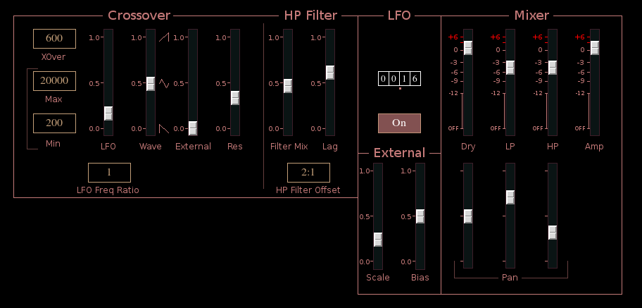
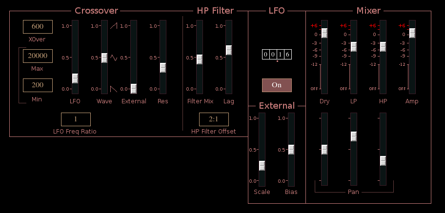

XOver
Previous( carnaldelay ) Next( flngr ) Home ContentsXOver is a duel filter effect. Two filters, one lowpass the other highpass/bandpass, share the same crossover frequency with the output cross fading between the two sets of filter.
 

Crossover section
The controls of the Crossover section are divided into two groups. All controls to the left are common to both lowpass and highpass/bandpass filters. The controls in the HP Filter section are specific to the highpass/bandpass filters.
The set of 3 multi-state buttons on the far left set the fixed crossover frequency and limits on the maximum and minimum frequency.
LFO slider sets LFO modulation depth of crossover frequency.
Lfo Freq Ratio button sets the crossover LFO frequency relative to
the main LFO.
Wave sets crossover LFO waveform, between sawtooth and triangle
External signal applied to crossover frequency
Res, filter resonance.
HP Filter
Filter Mix mix between highpass and bandpass filters
Lag lag applied to highpass/bandpass frequency control signal
HP Filter Offset frequency ratio of highpass cutoff to crossover
point
LFO
Internally there are 3 LFOs, the crossover frequency LFO and two filter mix LFOs. The filter mix LFOs produce sine waves and have the same frequency, but they are 90 degrees out of phase. The crossover LFO produces a sawtooth/triangle wave. The LFO tumbler sets the frequency for the two filter output LFOS. The crossover LFO frequency is always relative to this value as described above.
LFO on/off button, turns LFO modulation of filter outputs on or off
External
Scale value applied to external signal
Bias value added to external signal
Mixer
Dry signal slider
LP lowpass mix
HP highpass/bandpass mix
Amp overall amplitude
Pan Dry
Pan LP
Pan HP
Buses
inbus audio input
outbus1 audio output 1
outbus2 audio output 2
xbus xontrol input
lfo1aOutbus lowpass LFO output
lfo1bOutbus highpass LFO output, same signal as lfo1aOutbus except
90 degrees phase shift
lfo2Outbus crossover LFO output
XOver parameters
- lfoFreq, common LFO frequency (0,99.999)
- lfo2Ratio, crossover LFO ratio (see xover_constants)
- lfo2Wave, crossover LFO wave (0,1) 0.5 = tri
- lfoEnable, enable output LFO (0,1)
- res, filter resonace (0,1)
- xover, crossover frequency (see xover_constants)
- lfoToXover, LFO crossover modulation depth (0,1)
- externToXover, external signal crossover modulation (0,1)
- minXover, minimum crossover frequency (see xover_constants)
- maxXover, maximum crossover frequency (see xover_constants)
- filterBMix, highpass/bandpass mix (0,1)
- filterBRatio, highpass cutoff as ratio of crossover (see xover_constants)
- filterBLag, highpass control lag time (0,1)
- dryAmp, dry signal output amplitude (0,2)
- filterAAmp, lowpass output amplitude (0,2)
- filterBAmp, highpass outut amplitude (0,2)
- dryPan, dry pan (-1,+1)
- filterAPan, lowpass pan (-1,+1)
- filterBPan, highpass pan (-1,+1)
- xscale, external signal scale factor (0,4)
- xbias, external signal bias (-4,+4)
- amp, main output amplitude (0,2)
Previous( carnaldelay ) Next( flngr ) Home Contents